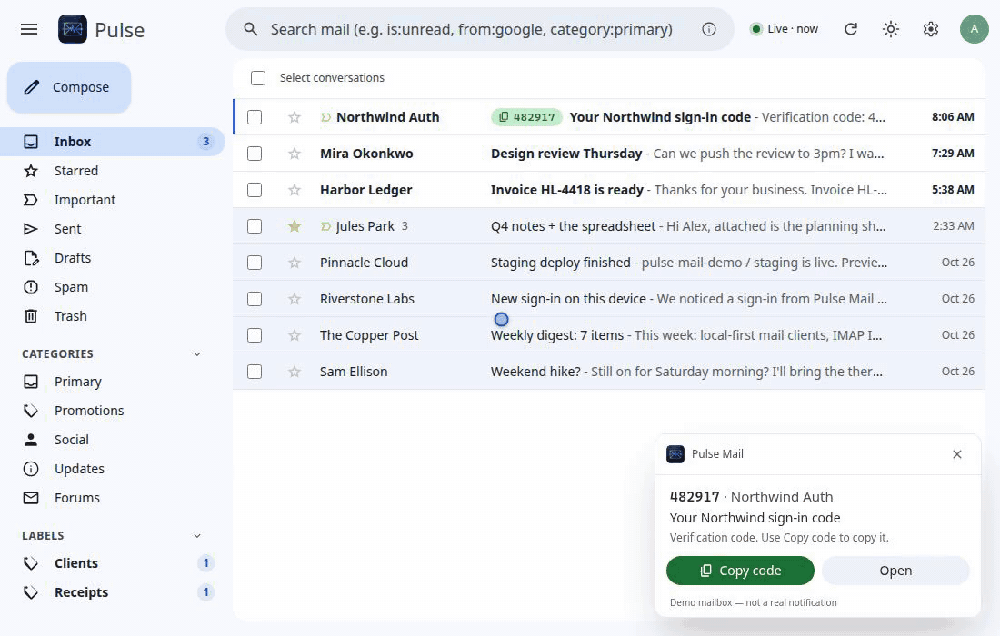
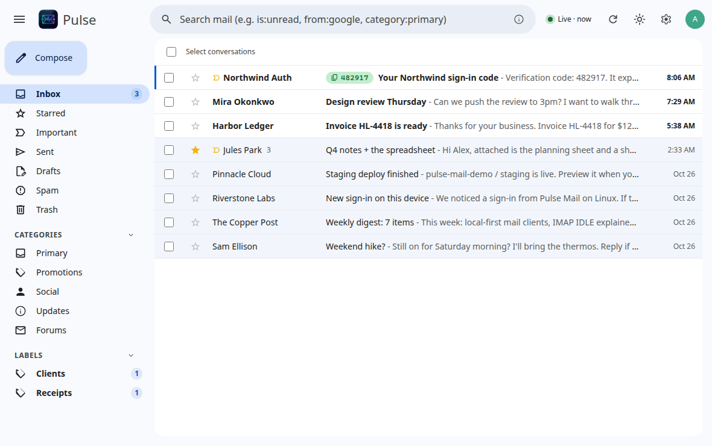
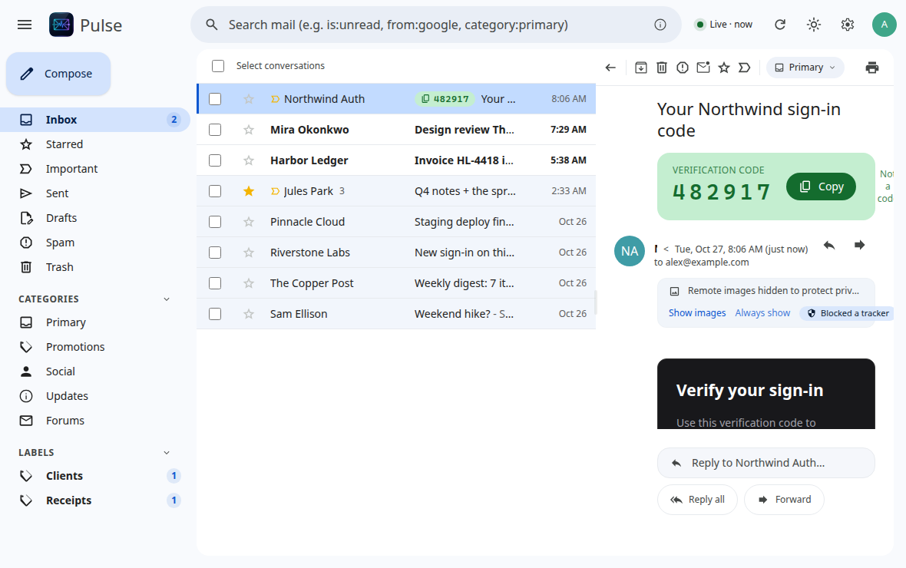
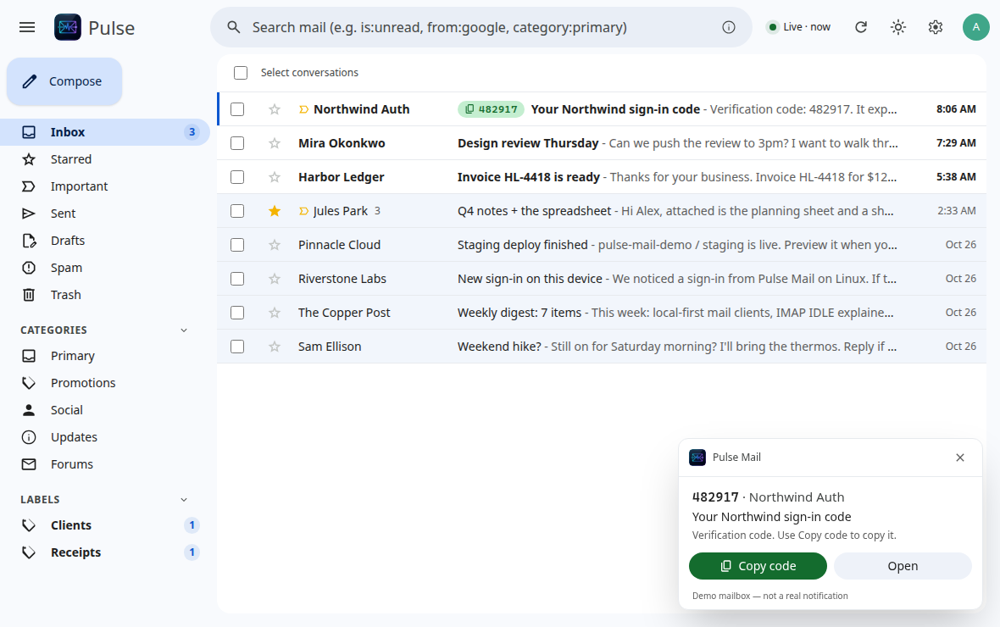

Tray + push
Stays in the tray. IMAP IDLE is the doorbell, then a cheap Gmail history sync. Not a 60-second poll loop.
Desktop Gmail · Windows daily driver
A Gmail client that lives in the tray, not in a browser tab. Stays running, toasts new mail in seconds, and puts 2FA codes on the notification so you can copy them without hunting the inbox.
Free, MIT. Windows 10/11 is the one that’s been lived in. macOS (Apple Silicon) and Linux ship experimental builds. Google still shows an “unverified app” warning until verification finishes — expected, and capped at about 100 users until then.

Claims below match the current app. Windows is the daily driver; the other platforms compile and ship.
Stays in the tray. IMAP IDLE is the doorbell, then a cheap Gmail history sync. Not a 60-second poll loop.
Verification codes and magic links are pulled out of the mail. Copy from the notification, the row chip, the reader, or Shift+C.
SQLite + FTS5 on this computer. Search hits the cache first; Gmail server search fills in older mail.
Sanitized in Rust, rendered in a sandboxed iframe. Remote images off until you click. Links open in your system browser.
A 5–10 second grace window before Gmail actually sends. Compose, reply, and labels work like Gmail’s shortcuts.
Per-account inboxes plus “All inboxes”. Tokens live in the OS keychain, one entry per account.
Full window from the demo mailbox — fictional senders, one Northwind OTP thread. Pick a view.






Pulse Mail is a desktop email client. When you click Sign in with Google it requests access to your Gmail so it can:
openid + profile).There is no Pulse Mail server. The app talks to Google (OAuth, Gmail REST, IMAP) from your computer, and to this project’s GitHub Releases for optional self-update. Mail, search, and tokens are not uploaded to us — we don’t have a place to put them.
The Gmail permission is the broad https://mail.google.com/ scope because IMAP XOAUTH2 requires it. Tokens go in the OS credential store. The mail cache is a SQLite file in your user profile; it is not encrypted at rest. Details, including how to revoke access and delete the cache: Privacy policy.
Installers are on GitHub Releases. Pick the file for your OS from the latest release (currently v0.4.1).
Pulse.Mail_*_x64-setup.exe (per-user) or the .msi.
SmartScreen may warn once — the installer isn’t Authenticode-signed yet. More info → Run anyway.
Get WindowsPulse.Mail_*_aarch64.dmg. Intel Macs are not built.
Unsigned. After dragging to Applications: right-click → Open the first time.
Get macOS.AppImage (self-updates), .deb, or .rpm.
Tray needs an appindicator; notification buttons work on GNOME/KDE.
Get LinuxAfter install: open the app → Sign in with Google. Google will say it hasn’t verified this app. That’s the same ~100-user cap as any unverified Gmail client. Building from source uses your own Cloud desktop client — see the repo README.
No account with us, no cloud mailbox, no telemetry, no ads, no sale of data, no AI training on your mail.
Refresh tokens live in Credential Manager / Keychain / Secret Service. Access tokens stay in memory.
Sign out in the app, or remove Pulse Mail at Google Account permissions. That also deletes the local cache for that account.
Full privacy policy · Terms of service · MIT license